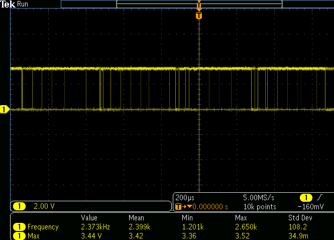
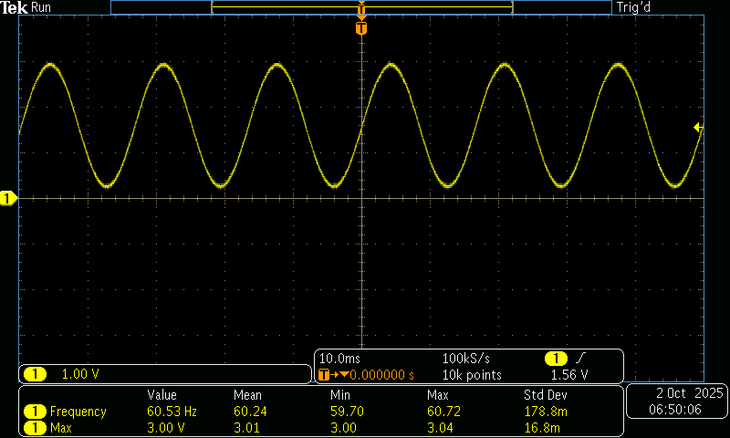

🤖 Tarea 7.3: Generación de Señales — Senoidal de 60 Hz con PWM + Filtro RC
Garcia Cortez Juan David · Arai Erazo Sumie · Sistemas Embebidos 1 · 01/10/2025.
Control con frecuencia buzzer
-
Entregable:
-
Generar una señal sinusoidal aproximada de 60 Hz variando el duty cycle del PWM según una función seno.
-
Construir un filtro RC pasabajos básico y verificar la señal en el osciloscopio:
-
Documentar:
-
Capturas de osciloscopio Antes del filtro (PWM) y Después del filtro.
-
Explicación de la frecuencia de corte:
-
El filtro RC se diseña para dejar pasar señales de 60 Hz y eliminar las componentes de alta frecuencia que provienen del PWM.
-
La frecuencia de corte (fcf_cfc) es el punto donde el filtro empieza a atenuar las señales. Matemáticamente:
* En este caso, queremos que fc sea un poco mayor que 60 Hz para que nuestra señal sinusoidal de 60 Hz no sea atenuada.
-
Valores recomendados para un fc≈100Hz
-
Opción 1: R=2.2 kΩR C=0.68 μF fc≈106Hz.
-
Opción 2: R=1.6 kΩR, C=1 μF fc≈100Hz
-
Conexion:
-
La salida de PWM entra en la resistencia.
-
Después de la resistencia, conectar el capacitor a tierra.
-
El punto entre resistencia y capacitor es la salida filtrada, que se conecta al osciloscopio.
Código
// pwm_seno.c — Generar seno 60 Hz con PWM en GPIO 3
#include "pico/stdlib.h"
#include "hardware/pwm.h"
#include <math.h>
#define PIN_PWM 3
#define FREQ_PWM 2000 // 2 kHz portadora
#define TOP 1023 // 10 bits de resolución
#define FREQ_SENO 60 // Señal deseada: 60 Hz
#define PI 3.141592653589793
// Número de muestras por ciclo de seno
#define N_MUESTRAS 100
uint16_t tabla_seno[N_MUESTRAS];
int main() {
stdio_init_all();
// --- Generar tabla seno ---
for (int i = 0; i < N_MUESTRAS; i++) {
float ang = 2 * PI * i / N_MUESTRAS;
float val = (sinf(ang) + 1.0f) / 2.0f; // [0,1]
tabla_seno[i] = (uint16_t)(val * TOP);
}
// --- Configuración PWM ---
gpio_set_function(PIN_PWM, GPIO_FUNC_PWM);
uint slice = pwm_gpio_to_slice_num(PIN_PWM);
uint chan = pwm_gpio_to_channel(PIN_PWM);
float f_clk = 125000000.0f; // 125 MHz
float div = f_clk / (FREQ_PWM * (TOP + 1));
pwm_set_clkdiv(slice, div);
pwm_set_wrap(slice, TOP);
pwm_set_enabled(slice, true);
// --- Temporización para 60 Hz ---
// Cada ciclo = 16.67 ms. Dividido en N_MUESTRAS → periodo de actualización:
float Ts_ms = 1000.0f / (FREQ_SENO * N_MUESTRAS); // ~0.167 ms (167 µs)
int idx = 0;
while (true) {
pwm_set_chan_level(slice, chan, tabla_seno[idx]);
idx = (idx + 1) % N_MUESTRAS;
sleep_us((int)(Ts_ms * 1000));
}
}
Señal No Filtrada

Señal Filtrada
